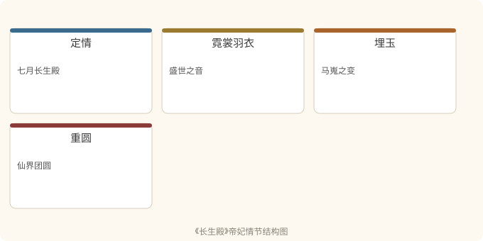

长生殿
一、基本信息
| 作者 | 洪昇 |
|---|---|
| 成书/出版 | 写成于康熙二十七年（1688）（光明日报 C027） 《晚明文化与昆曲盛世》（光明日报）（官方媒体） |
| 国别/地区 | 中国 |
| 时代 | 古代 · 清（康熙） |
| 体裁 | 传奇（戏曲） |
| 语言 | 汉语（曲牌体） |

《长生殿》帝妃情节结构图（主题·结构图）
二、创作背景
光明日报（C027）：'《长生殿》写成于康熙二十七年（1688）'；与《桃花扇》一样'都遭到了很大的政治压迫，难以摆脱以古讽今的指责'。
题材：唐明皇与杨贵妃的帝妃爱情（通说；取材《长恨歌》系——通说待核）。
三、内容脉络
定情→霓裳羽衣→马嵬之变→冥追→雨梦——以情亡国、以情复生（出目通说待核）。
后半以仙界重圆收束（通说待核）。
四、主要人物表
| 人物 | 身份 | 说明 |
|---|---|---|
| 李隆基（唐明皇） | 皇帝 | 帝妃恋（通说） |
| 杨玉环 | 贵妃 | 马嵬之殇（通说） |
| 李龟年等 | 乐工 | 兴亡见证（通说待核） |
五、主题与艺术特点
- '逞情'与'勤政'的矛盾（通说待核——作者自序语）。
- 兴亡之感的戏曲化（C027：以古讽今的指责）。
- 昆曲音乐的集大成（通说待核）。
六、影响与评论
- 光明日报：'《长生殿》写成于康熙二十七年（1688）'，与《桃花扇》同为康熙年间遭受政治压迫的名剧（C027）。
《晚明文化与昆曲盛世》（光明日报）（官方媒体） - 与《桃花扇》并称清初剧坛双璧、'南洪北孔'（通说待核）。
《晚明文化与昆曲盛世》（光明日报）（官方媒体）
七、阅读建议
难点
- 曲牌体唱词的格律。
- 天宝掌故的注释。
- 《长生殿》（人民文学出版社，通说待核）。
先读《定情》《絮阁》《埋玉》《雨梦》四出（通说）。
八、待核实
- 五十出出目核对。
- 长生殿案（1689年丧期演出革监生说）待核。
- 取材《长恨歌》《梧桐雨》的谱系核对。
本页主要来源
洪昇的其他收录作品：长生殿